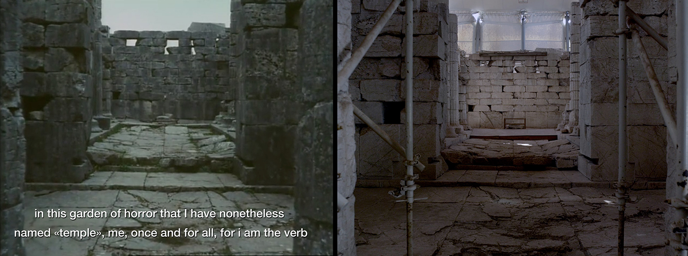

Ecology and Emancipation
| Author | Fabien Giraud, Max Turnheim |
| Publication | Sanrocco, #10, Ecology |
| Year | 2014 |

Bassae is a film about a Greek temple shot in 1964 by Jean-Daniel Pollet in the Arcadian mountains of the Peloponnese. In 1986 UNESCO added the site to the World Heritage List and the Greek Ministry of Culture started the restoration of the ruined temple of Bassae Apollo Epicurius, the site has been covered by a large white tent and earthquake-proof scaffolding. In the aftermath of the debt crisis that hit Greece in 2009, work there ground to a halt and the restoration structure itself was exposed to decay.
Bassae Bassae, a film directed by Fabien Giraud and Raphaël Siboni in 2014, is about this doubled ruin. In a rigorous remake of Pollet’s original movie, it shows the temple in its present state, revealing the overlapping of the restoration’s failure with its own collapsed architecture.
Of these two films, we will say nothing more here. We simply wanted to use their production dates as the historical boundaries of what can be considered as a true phase-change in our conception of space. This essay attempts to evoke the emergence over the last fifty years of what can be called an “ecological spatiality”. By problematizing both the epistemic consequences (the naming of things) and the political consequences (action upon things) of this concept, we would like to attempt to reformulate a simple question of architecture: Within which and for which space do we build?
I. The Space of Gods

Alain Badiou’s explication of the three consecutive deaths of God1,
evolutionary relationship to the infinite, can be perceived as a history of spatial collapses.
From this perspective, the God of Religion, the God of Metaphysics and the God of Poets that Badiou identifies as the three sequential phenomena of this evolution must be seen as successive models wherein mankind’s relationship to his environment is spatialized in a totalizing order. Each god is a construction that enabled us both to establish meaningful connections within the infinite array of worldly events and forms and to define a mode of conduct according to the ordered distribution that resulted from this.
As such, the spatial “model of god” has two aspects: it serves to name relations, and it enables action within them. It is precisely the development over time of this link between naming and acting, and of the spatialities resulting from the tension that arises between these two elements, that constitutes the sequences of Badiou’s history:
-
The God of Religion is the god with whom we have to live and negotiate for our lives. It is a living god, in so far as our existence in this world is constantly exposed to the possibility of an encounter with him. The model it yields is centred around the advent of this relationship. Its spatiality is a relational one.
-
The God of Metaphysics is the god who brings relations into the world while remaining outside of them. He is the “supreme immobile mover”, both the origin and vanishing point of all physical activity. We cannot expect to encounter such a god; there can be no exchange with him. We can only hope to approach and reveal the truth of his unilateral giving: he is the one who contains while being contained by nothing other than himself. He thus embodies the notion of an absolute spatiality.
-
The God of Poets, in contrast, is neither relational nor absolute. The space he engenders is not one of proximity, nor is it one of severed totality. He is the god of Hölderlin, the withdrawn god whose impossible return can only be performed through the Poem. He is the god of Heidegger whose absence is revealed by the promise of him coming back, the one Heidegger referred to in his famous televised statement “Only a god can save us.” This model, whose primary traits are loss and nostalgia, aporia and awaiting, is characterized by an exiled spatiality.
As models of relational, absolute and exiled spatialities, we can easily admit that these three gods have experienced irreversible deaths. There is no living entity with whom to negotiate our place in the world; there is no outside principle giving sense to its movement; there is no language that could enable their return.
If for Badiou the task of philosophy is to unfold the consequences of these deaths as much as to think beyond them, then the task of architecture can be perceived as that of modelling and building upon the ruins of the gods’ collapsed spatialities.
The most direct consequence of this triple collapse is the advent of a new type of space. Negatively defined as what remains when all gods and totalizing orders have fully withdrawn from the scene, the generic designation of this space is a radical “here”. What we now need to do is reveal the model of this “here”, where no subject can safeguard relations, where no superior order can contain movements and where no words can fill the absence. If “here” is the place that results from the collapse of all totalities, and if its emergence negates the very possibility of all- encompassing spatial models, then the question that remains is this: how can we posit an orderly interrelationship between the naming of space and action within it that is adequate to the new conditions with which this “here” presents us?
In the discussion that follows, we will try to address how ecology has emerged as a historical response to this question by establishing itself as a model that enables us to name the “here” in a specific way and to act within and upon it. Furthermore, by briefly identifying different architectural approaches to the kind of spatiality ecology has engendered, we would like to provide a sketch of a model of ecology suited to the requirements of our present “here”.
II. The Space of Ecology

The deaths of Badiou’s three gods and the landscape they bequeathed us provided the fertile ground of postmodernity. By both prolonging and dramatizing the collapse of these models, postmodernity has cultivated a terrain of suspicion where all totalizing attempts and narratives are thrown into crisis; this terrain is infused with a general skepticism that, in its weakest yet most influential form, has found resolution in the realm of anecdote and the sorrow of “archivism”. It was against this “paralysis of thought” – whose main expression is falsely modest cultural relativism – and against the taboo regarding any confrontation with immeasurableness that a particular idea of ecology emerged at the end of the 1980s. The most prominent figures of this conceptual turn have been Peter Sloterdijk and Bruno Latour.
Sloterdijk’s and Latour’s respective theories of spheres and networks are similar attempts to reestablish the model in the unmodelizable fragmented landscape of the postmodernists.
With his spherology, Sloterdijk has replaced history with a morphology of inhabitable spaces, while Latour, through his actor–network theory, has replaced nature with the infinite intermeshing of objects and subjects.
Setting aside the notable differences between these theories, both nonetheless endorse a similar position on the question of space. For Sloterdijk, history is not that which happens in a space, but that which produces spaces. For Latour, entities do not exist within a space, but rather engender their own spaces through the composition of their movements. It is precisely this shared perception of the reversal of the relationship of a space with its constitutive components that we would like to call an “ecological spatiality”.
So what are the main features of such a spatiality?
Its foundation is the affirmation that all of the problems pertaining to the modernists’ order and the crisis that followed in their wake can only be resolved through a change in geometry from a containing space to a flattened one.
If the collisions of social order and natural order – of subjects and objects – seem to have generated unsolvable problems that we are obliged to face, then this is merely due to the inadequacy of our spatial models in addressing these collisions. Following what Jean Cavaillès identified as the process of the “trimming of the extrinsic” in modern mathematics, the radical constructivism of ecological spatiality could be said to extend this movement into an ever more intrinsic conception of space. It is only once space has been freed from any notion of “exterior” and “containment”, and only once all entities have been released from their referential frame and all things have been “flattened onto” the infinite manifold of relations that a true ecology – understood as a logic of habitation – can be articulated.
What follows from this geometric thesis is an ontological one. Ecology, according to this paradigmatic spatial shift, is a commitment to the reversal of the relationship between Being and beings. Its philosophy – referred to as Relationist Ontology – is one in which the depth of Being emerges from the superficial relations between beings. This thesis is best exemplified in the imaginary question Peter Sloterdijk once addressed to Martin Heidegger: “When you say that Dasein is thrown into the world, where is it thrown? What’s the temperature there? The colours of the walls, the material that has been chosen, the technology for disposing of refuse, the cost of the air-conditioning, and so on?”2
With regard to this ecological spatiality, we would argue that the two polarizing figures of contemporary architecture are Patrik Schumacher and Pier Vittorio Aureli. By evoking their theoretical endorsement and practical development of two seemingly radically opposed strategies, we want to consider them, despite the risk of caricature, as two schematic figures in the diagram of the present.
Schumacher has been Zaha Hadid’s partner since 1988. He has taken Hadid’s gesture of “landing” the modernists’ lifted mass – the idea of connecting design intentions to the specifics of the territory they address – to a radically further point. While the early architectural projects of Hadid’s practice seemed merely to address the interaction of built mass with its surroundings, its current projects aim to structurally infuse their context. The idea is to recognize the current communication-driven free market as an operative social structure in which the goal of architecture is to build analogous environments through an intensely interconnected set of subsystems, thereby resulting in the continuous spatiality of the “global urban field logic”. To use a geographic metaphor, Schumacher’s strategy is one that cannot be fulfilled with the mere act of landing; rather, it requires one of flooding the context through a constant management and acceleration of its relations: “Give me any collage of unrelated elements and I can generate connections and resonances, invent correlations. So I reject the pure interruption, the pure discontinuity.”3
Pier Vittorio Aureli, as a counterpart, perceives Patrik Schumacher’s prophecy as an already realized one: Cerdà’s urbanización is already the state of the current world – its flooding has already happened and its engulfment in the aqueous milieu of capitalism has long been realized. Contrary to this formal liquefaction, which he perceives as complicit in the dynamics of neo- liberalism, Aureli conceives of the act of building as one that no longer operates through smooth transitions but rather as cuts in the field of relations. In an architectural project he himself defines as an equation of the political with the formal, the question of the notion of the limit becomes central. It is by defining a limit (or by recognizing and emphasizing an existing one) that he is able to generate an autonomous territory, one capable of withdrawing from any interaction with its surrounding spatiality. Autonomy from the surroundings is Aureli’s project:
In this way, absolute architecture as a finite form is not simply the tautological claim of its literal object; it is also the example for a city no longer driven by the ethos of expansion and inclusion but by the positive idea of limits and confrontation. By clearly exposing their limits, architectural parts confront each other and form an agonistic plurality, becoming a site where judgment through difference is again possible.4
Of these two models – one relational, one disruptive – we can identify the risks inherent to their positioning with regard to ecological spatiality. If we admit that the name we have given to the space of our time is Relationist Ontology, then problems arise when one tries to identify the kind of action they would propose in its “flattened” landscape.
In Schumacher’s model, we can identify his concept of action as that of preserving – at any cost and, most notably, by voluntarily blinding himself to the socio-political consequences of his constructions – the dynamics of relations and the inherent creativity of his generative system. In Aureli’s model, we can describe its logic of disruption as that of a pure re-action, one that runs the risk of reaffirming pre-constituted social orders.
Through this voluntarily naïve reading of the two architects’ respective projects, what we are left with are two competitive types of action upon the named space of ecology. In one, we have a conservative model according to which to act is to preserve the naming of space. In the other, we have a reactionary model in which to act is to negate the naming of space.
These attempts, defined respectively by dialectics of conservation and reaction, both essentialize relations and absolutize confrontation. In doing so, they also both re-establish pre-existing spatialities we thought had long since disappeared. In Schumacher’s work, the relational model of the living god is revealed in its updated and digitized form. The all-encompassing computational paradigm it embraces limits the world’s possibilities to the movements of the “discrete engine”, making the latter the obscure subject of relations. A similar critique could be made of Aureli’s approach. Indeed, the endorsement of the absolute (in the sense of the “severed” and the radically “un-linked”) as the foundation of his project could be read as reintroducing a distinctive order – an incommensurable exterior space – into the continuous plane of relations.
As a result, both of these models remain bound to an extrinsic definition of space and are thus inherently inadequate ones in relation to ecological spatiality.
III. The Space of Emancipation

Opposed to these two recognized dead ends with regard to the kind of action to be taken in the context of an ecological spatiality, what we need is an emancipatory model – a model which, once freed from the incessant duality of conservation and confrontation, posits an action within relations that is capable of transforming the very name we have given them.
It is only through a further descent into the intrinsic that such an emancipatory model can be articulated. Conceived in its political sense, an emancipatory model consists in an exceeding of the boundaries of the realm of what is “possible”. It is an ampliative model, in so far as the outcome of its actions not only exceeds its premises, but also constantly reconfigures the very constitutive correlation between naming “the possible” and acting upon it.
Contrary to this constant deracination of the model by itself, Schumacher’s practice is merely the expression of a “phase portrait” of given sets of possibilities. The spatiality that results from his architectural model is simply the totality of all possible becomings within the clearly defined boundaries of his relational methodology. In defining things this way, he attributes an identity to “the possible” and then merely limits its range to systemic conservation, thus remaining inherently bound to a conservative model.
We could argue that Aureli opposes the image of the flood that served as the most accurate analogy for Schumacher’s project with that of the dam. A dam is not simply a cut in a river; it is also a device of differentiation. This differentiation operates on two distinct levels: firstly, as a purely quantitative pressure difference between the contained and released water; and secondly, as a fully qualitative change when this pressure difference is transformed into electricity. On the one hand, we have differences in degrees, and on the other, differences in kind.
While Schumacher is doomed to the vain wanderings of conservative gesticulations, the metaphor of the dam allows us to rescue Aureli from the reactionary pitfall to which we have rhetorically subjected him. Opposing the definition of the cut – as that which re-establishes an impossible exteriority to the realm of relations – the dam enables the possibility of a fully intrinsic and operative discontinuity.
The dam is an embedded blockage – not an act of secession – which, by opposing its mass to the flow of the river, not only prevents the flooding of the landscape, but also engenders a whole new set of possibilities – a fundamentally different spatiality, regardless of which side of the dam it is observed from.
The act of producing a discontinuity goes beyond enclosing a space and producing its dual outside; it is not a mere binary partition of the plane, but an act of creation.
By the mere existence of discontinuity, continuity – here understood as the ordered relation of parts to whole – is simultaneously disrupted and redistributed in a new and unpredictable structure.
Contrary to the purely quantitative emergence of parametric models, discontinuity operates on the very structure of the spatiality within which it appears. Through its actions, it potentially modifies space to the point where the very model becomes inadequate. With this qualitative “phase change” in the model itself, it is the very binding of naming and acting which undergoes transformation. This autocatalysis of the model – whereby every act within the space of possibilities feeds back into the very name given to “the possible” – unfolds as a constant emancipation from all identities.
In light of this analogy, the very notion of the absolute, which we previously identified with the reactionary model, could take on a completely new meaning, one that fully discards the absolute of territorial confrontations and secessionist logics in favour of the possibility of an intrinsic absolute.
Aureli’s project, once fully embedded in a radically intrinsic spatiality, effects a shift from an architectural model of continuity to one of contiguity. It becomes a praxis of the border, a production of spaces through transformative acts of bordering.
The possibility of an intrinsic “absolute architecture” is that of a commitment to the constant deracination of our “here”. By performatively defining this “here” as a truly generic and undifferentiated continuum of pure possibilities in which there is nothing to sustain, preserve, compose or nurture, and in which there is nothing to detach from and nowhere to go back to, it proposes a model of ecology as a method for severing and thus absolutizing “the possible” from any binding identity.
-
Alain Badiou, Briefings on Existence: A Short Treatise on Transitory Ontology, ed. and trans. Norman Madarasz (Albany: State University of New York Press, 2006). ↩
-
Bruno Latour, “Spheres and Networks: Two Ways to Reinterpret Globlization”, lecture given at the Harvard University Graduate School of Design, 2009. ↩
-
Patrik Schumacher interviewed by Peter Eisenman, “I Am Trying to Imagine a Radical Free-market Urbanism”, Log, no. 28 (Summer 2013), 43. ↩
-
Pier Vittorio Aureli, The Possibility of an Absolute Architecture (Cambridge, MA: The MIT Press, 2011), 42. ↩